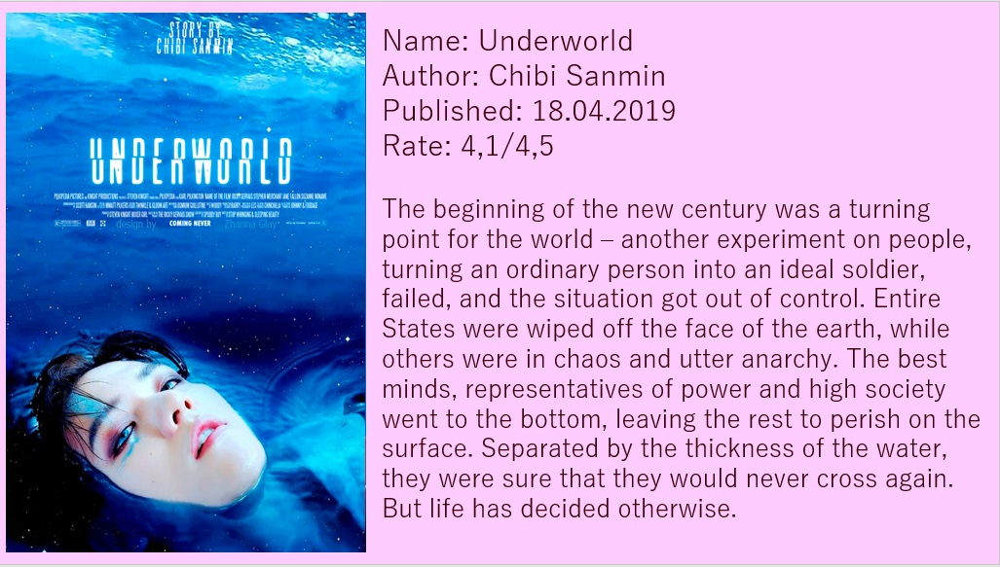
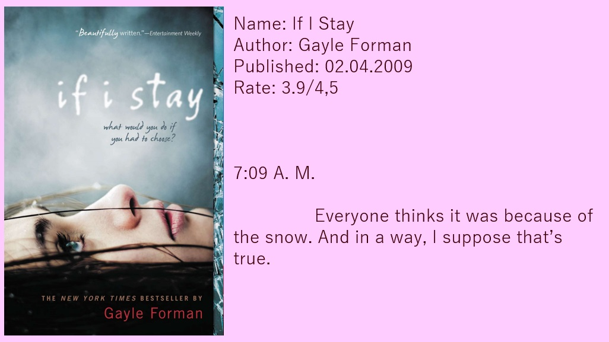
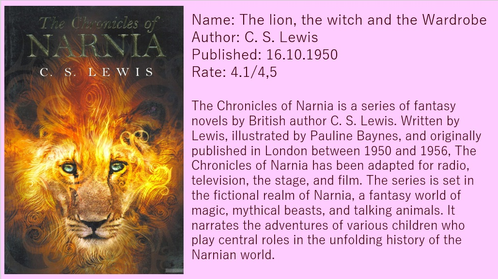

A list of books
Call me your name
Author: Andre Aciman
Underworld
Author: Chibi Sanmin
The Shack
Author: William Paul Young
If I stay
Author: Gayle Forman
Dark Minds
Author: Alexandra Bracken
The Lion, the Witch, and the Wardrobe
Author: C.S. Lewis


